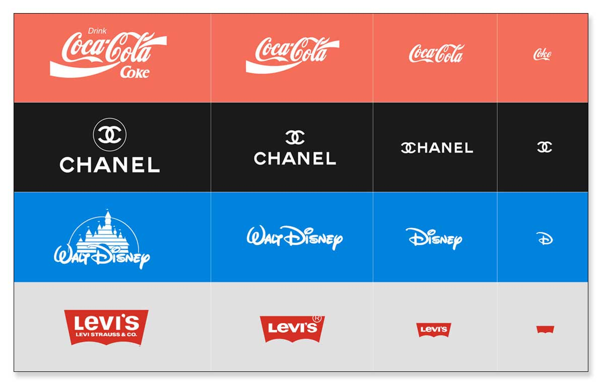

Diseño coherente
Las guías de estilo definen colores, tipografía, espaciado y comportamiento de los componentes para mantener una experiencia consistente.
Las bibliotecas de componentes reutilizables aceleran el desarrollo y aseguran que las interfaces respeten los lineamientos de cada plataforma.
